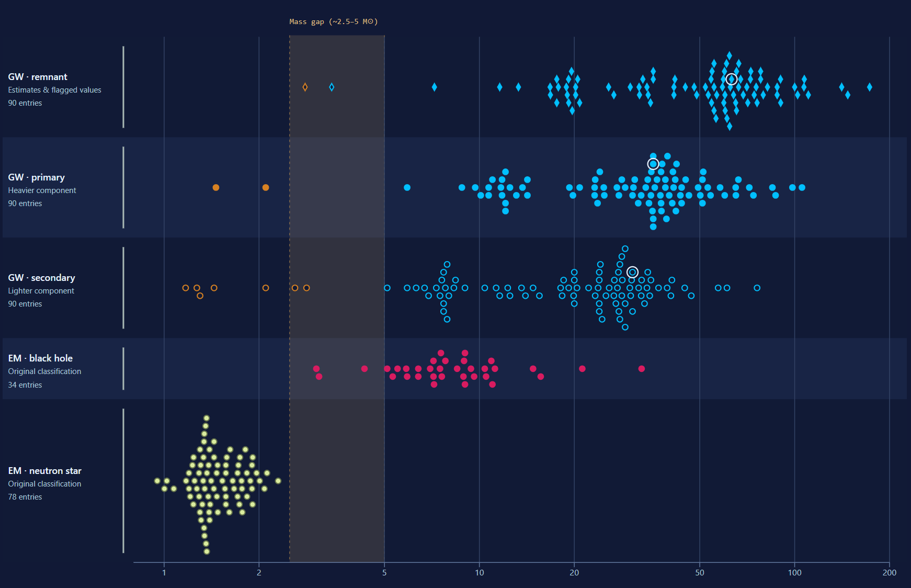
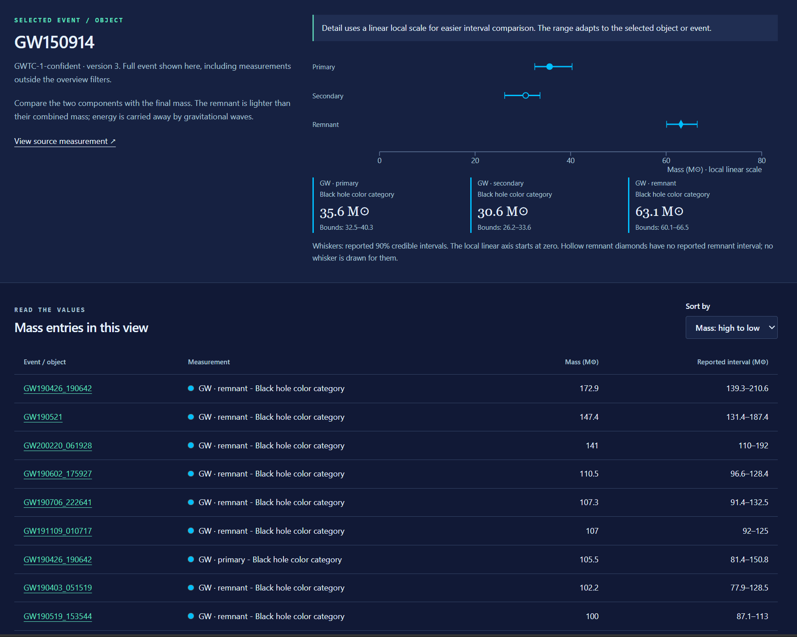

1 / Original visualization2 / Analysis of original visualization3 / Critique of original visualization4 / New Redesign5 / Explanation of redesign
Part 1 / Original visualization
Masses in the Stellar Graveyard
Created by Aaron Geller et al., this interactive visualization brings together mass estimates for black holes and neutron stars inferred from gravitational waves (GW) and electromagnetic observations (EM). GW events can contribute two component masses and a remnant estimate; EM entries describe individual compact objects.
The standard view preserves a mass axis, but the many merger arrows compete with individual measurements. Supplied screenshots of the original; select an image to open it at full resolution.
The interface additionally offers separate GW and EM sorting, category toggles, point-size controls, search across the four views.
Part 2 / Message, audience & tasks
Analysis of Original Visualization
1
Message
The visualization intends to portray the mass range of stellar remnants is broad and different observing methods (gravitational waves vs. electromagnetic observations) reveal different parts of it.
The first view communicates mass patterns while highlighting a potential mass gap in the range of 2.5-5 solar masses where very few of these astronomical objects are found.
2
Audience
Astronomy/astrophysics students, educators, researchers, and interested members of the public are the audience of the original visualization.
The expressive title and vivid marks invite exploration, however, terms such as chirp mass, effective spin, and SNR assume background knowledge of the viewer.
3
Tasks
Compare mass ranges across categories.
Find unusually light or heavy objects.
Locate a named event and compare its components with its remnant.
Inspect estimates and uncertainty near the proposed mass gap.
Part 3 / Design critique
Critique of Original Visualization.
What works
The shared scale
The standard view puts all masses on one logarithmic axis, making a large range visible. Color and a prominent legend distinguish the four method/type combinations.
Relationship visualization
Merger arrows communicate a relationship between components and remnants. Search, filtering, and tooltips let viewers locate an event and access detail without labeling every point.
Five design weaknesses, their consequences, and proposed improvements
What's the problem
Why it matters
How it can be improved
1 Layouts without a common mass axis
The three alternative views use a force simulation even though spatial proximity doesn't encode a meaningful quantitative variable. As a result, positions are unstable and difficult to compare across sessions, the layouts require computation before settling, and dense links create the classic "hairball" problem.
Keep mass on a fixed horizontal axis and use deterministic packing only to separate overlapping marks vertically without simulation. These three views don't support the user tasks that reveal the intended astrophysical relationships, so we can replace them entirely.
2 Too many sparse relationships
In dense node-link views, crossing links obscure the marks and make any single merger hard to trace. Even the standard view can suffer from too many similar arrows.
Separate component (primary and secondary) and remnant (final) rows, then highlight one event across them. Then, shows its measurements together in a dedicated detail panel. Tasks to inspect a specific event greatly benefit from this.
3 Mass encoding is redudant
The standard view represents mass through both position and point size. Large marks draw attention and occupy more space while still depending on the axis. Adjustable sizes further enhance the visual emphasis.
Use equal-size marks within each row and compare mass through an aligned position. Use the original colors for object categories and row labels and shapes for measurement roles. This way, the mass measurement uses the dominant spatial encoding.
4 Too many choices before a task
Decorative sorting modes such as Peaked, Valley, and Diamond change the overall shape without making scientific comparison easier. The amount of controls unnecessarily increases the effort needed to find a useful view.
Offer controls tied to tasks: search an object, filter a method, inspect low masses, or sort exact values. Includes a few named examples to give first-time viewers a starting point.
5 Estimates are actually uncertain
The current view hides uncertainty estimates. The logarithmic scale emphasizes larger uncertainty values over small ones. Detection methods also sample different populations.
Show reported intervals in the selected-object view and table using a linear scale. Label the mass gap (~2.5-5 M☉) as a reference and distinguish GW credible intervals from heterogeneous EM bounds.
Part 4 / Redesign
Redesign of Masses in the Stellar Graveyard
Compare the observed mass ranges or select an object to see its details.
The mass atlas
Stellar Remnants
Frozen snapshot · GWTC-1 to GWTC-3
90GW merger events
112EM objects retained
382mass entries shown
1 M☉ = the mass of our Sun. GW masses are in the source frame.
Color = object category · Row & shape = measurement role
GW colors follow the original mass-based convention: below 3 M☉ is orange (neutron star); 3 M☉ and above is blue (black hole). Objects within 2.5-5 M☉ are ambiguous in their identity, so color does not confirm physical identity within the GW rows in the mass gap.
Loading the local dataset…
Swipe the chart horizontally to compare the full mass range ?
No measurements match these filters. Clear the search or reset the atlas.
Equal distances on the log axis represent equal ratios.
Vertical offsets separate overlapping marks; they encode no quantity. All rows share the same axis. Select a point, or use the table below.
Detail uses a linear local scale for easier interval comparison. The range adapts to the selected object or event.
Read the values
Mass entries in this view
Filtered mass entries, including flagged remnant values. Select a name to inspect all measurements for that event.
Event / object
Measurement
Mass (M☉)
Reported interval (M☉)
Part 5 / Design rationale
Explanation of redesign.
1
Mass measurement uses dominant spatial encoding
I replaced force layouts and variable-size circles with aligned mass positions and equal-size marks within labeled rows. This addresses arbitrary proximity and competing size encodings. A fixed axis makes ranges and outliers easier to compare; filtering hides points without repacking the remaining ones. The original blue, orange, magenta, and yellow-green palette preserves object categories, independently of the rows and shapes that encode measurement roles.
2
Relationships are inspected when chosen
I replaced the web of links with coordinated highlighting and a selected-event interval plot. This addresses crossing lines while retaining the component-remnant relationship. Selecting GW150914, for example, brings its three measurements together without tracing arrows through the full catalog.
2
Retained uncertainty estimates
I added labeled intervals, source links, exact values, and reframed the mass gap. This addresses the uncertainty estimates not originally visualized. For GW190814, the secondary estimate is 2.6 M☉ with reported bounds of 2.5-2.7 M☉, so mass alone cannot the object’s identity.
4
Controls align the user's task
Instead of creating decorative arrangements which aren't useful for scientific analysis, I added toggles for search, method filtering, a low-mass range, and value sorting. Logarithmic and linear overview scales support ratio and difference comparisons respectively depending on the user's preference. The detail plot always uses a labeled local linear scale for interval comparison with a range that adapts to the selected event.
Before → After
Less merger tracing for more population comparison.
The original offers an expressive, comprehensive overview of the stellar graveyard. The redesign makes three tasks more direct: comparing ranges on a common axis, locating a named event, and judging a mass estimate alongside its uncertainty. Persistent labels make observing methods and merger roles explicit, while the table supports precise comparisons that packed circles cannot.
The trade-offs: separating primary, secondary, and remnant measurements makes their mass distributions easier to compare, but removes the original's explicit visual links between components of the same merger. Only one event’s intervals are shown at a time. These changes improve the chosen comparison tasks, but the redesign does not allow viewers to immediately determine which three marks belong to the same event.
Critique and redesign / Essay
Critique and Redesign of
Masses in the Stellar Graveyard
Masses in the Stellar Graveyard is an interactive visualization created by Aaron Geller and collaborators for Northwestern and LIGO–Virgo–KAGRA. It brings together mass estimates for black holes and neutron stars observed through gravitational waves (GW) and electromagnetic observations (EM). GW events may contribute a primary mass, secondary mass, and remnant mass, while EM entries describe individual compact objects. The main message is that stellar remnants occupy a broad range of masses and that different observing methods reveal different parts of this range, including the proposed 2.5-5 M☉ mass gap. The intended audience includes astronomy students, educators, researchers, and interested members of the public. Important tasks are comparing mass ranges across categories, finding unusually light or heavy objects, locating named events, comparing merger components with remnants, and inspecting objects near the mass gap.
Figure 1. Original standard view of Masses in the Stellar Graveyard.
The original has several strong design choices. First, the standard view places all masses on one logarithmic scale, allowing neutron stars and very massive black-hole remnants to remain visible in the same view. Color also provides a clear categorical encoding for GW black holes, GW neutron stars, EM black holes, and EM neutron stars. Second, the merger arrows communicate relationships between components and their remnants. Search, filtering, and tooltips provide additional detail without requiring every point to be permanently labeled.
However, several design choices make comparison more difficult. The three alternative views use force-directed layouts even though spatial proximity does not encode a meaningful quantitative variable. Their positions are unstable, require time to settle, and dense links create the classic “hairball” problem. Even in the standard view, many similar arrows compete with individual measurements and can make one event difficult to trace. Mass is also encoded redundantly through both position and point size, even though position on a shared scale already provides the more accurate comparison channel. Some controls, such as decorative sorting arrangements, change the overall shape without clearly supporting scientific tasks. Finally, the overview largely hides uncertainty, even though these masses are estimates rather than exact values.

Figure 2. Redesigned mass overview using categorical beeswarm plots.
My first major redesign decision was to replace the force layouts with a deterministic beeswarm overview. Mass is encoded by horizontal position on a shared axis, while five labeled rows separate GW remnant, primary, and secondary estimates from EM black holes and neutron stars. Equal-size marks remove the competing area encoding, and vertical offsets are used only to prevent overlap. The mass-gap band is retained as a shared reference across all rows. This makes population ranges, clusters, outliers, and overlap much easier to compare directly.
The second major decision was to separate overview from event-level detail. Instead of drawing every component-remnant relationship simultaneously, selecting an event highlights its measurements and opens a detail panel where its primary, secondary, and remnant estimates are shown together. This preserves the relationship task without requiring users to trace arrows through the entire catalog. The detail view also introduces uncertainty whiskers and exact reported bounds. A local linear scale is used because interval width is easier to interpret as a difference than on a logarithmic scale.

Figure 3. Selected-event interval view and exact-value table.
The third major decision was to align interaction with specific tasks. Search, observing-method filtering, low-mass filtering, axis-scale selection, and value sorting replace decorative rearrangements. A table provides exact values and reported intervals for lookup, while the beeswarm remains responsible for pattern discovery. Together, these components form a coordinated overview-detail interface rather than three unrelated visualizations.
Compared with the original, the redesign improves population comparison, outlier detection, inspection of the mass gap, uncertainty interpretation, and exact-value lookup. The main trade-off is that separating primary, secondary, and remnant rows removes the original’s immediate visual links between all merger components. Only one event’s intervals are shown at a time, so the redesign favors focused comparison over seeing every relationship simultaneously. It also uses a frozen teaching snapshot rather than the newest possible catalog, and GW credible intervals and EM published bounds are not statistically equivalent. These limitations are documented so the visualization does not imply more certainty or completeness than the data support.